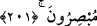
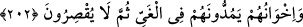
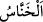

bırakarak sana fayda verecek şeyleri işitir. (et-Te’vîlâtü’n-Necmiyye’de böyle
geçmektedir.)
201. Takvâya erenler var ya, onlara şeytan tarafından bir vesvese dokunduğunda
(Allah’ın emir ve yasaklarını) hatırlayıp hemen gerçeği görürler.
“Takvaya erenler” Kendilerine zarar verecek şeylerden kendilerini koruyabilme
vasfına sahip olanlar “var ya onlara şeytan tarafından bir vesvese dokunduğunda”
kendilerine şeytan yönünden bir vesvese geldiği zaman hemen Allah’ın emir ve
yasaklarını, yahut Ebüssuûd Efendi’nin görüşüne göre Allah’a sığınıp ona tevekkül
etmeyi “hatırlarlar,” bu hatırlama sayesinde “hemen gerçeği görürler.” hata ettikleri
yerleri ve şeytanın tuzaklarını görüp onlardan sakınırlar ve asla şeytana tâbî olmazlar.
202. (Şeytanların) dostlarına gelince, şeytanlar onları azgınlığa sürüklerler. Sonra
da yakalarını bırakmazlar.
Şeytanların “dostlarına gelince” ki onlar, azgınlığa saplanmış ve nefislerini zararlı
şeylerden sakındırmaktan yüz çevirmiş kimselerdir. “şeytanları onları azgınlığa”
dalâlete “sürüklerler.” yani, azgınlıkta daha ileri gitmeleri hususunda onlara yardımcı
olurlar. Azgınlığı ve sapıklığı güzel gösterip ona teşvik ederek onlara destek verirler.
“Sonra da yakalarını bırakmazlar.” onları tamamen yoldan çıkarana kadar
saptırmaktan geri durmazlar.
Akıllıya gereken, azgınlardan uzak durmak ve şeytanın vesvesesinden sakınmaktır.
Hikaye edilir ki, velîlerden biri Allah Teâlâ’dan şeytanın nasıl gelip vesvese
verdiğini kendisine göstermesini ister. Hak Teâlâ ona billûr şeklinde bir insan heykeli
gösterdi. İki omuzu arasında kuş yuvasına benzer siyah bir ben vardı. Şeytan hınzır
suretinde ve fil hortumu gibi bir hortumla geldi, heykelin etrafını dolaştı. Sonra
omuzları arasından yaklaşarak hortumunu heykelin kalbine doğru soktu ve ona vesvese
verdi. O heykel Allah’ı zikredince şeytan dönüp gitti. Velî de bu manzarayı seyretti.
Bu sebeple şeytana “” denilmiştir. Çünkü zikrin nuru kalpte belirince şeytan
ökçeleri üzerine dönüp kaçar. İşte bu ilâhî sır sebebiyledir ki, Rasûlullah (s.a.v.) iki
omuzu arasından kan aldırır ve böyle yapılmasını emrederdi. Şeytanın maddesini
azaltmak ve gözetleme yerini daraltmak gayesiyle O’na bunu Cebrâil (a.s.) tavsiye